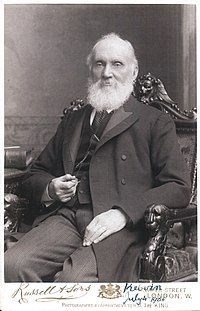

A escala kelvin foi proposta em 1848 por William Thomson (Lorde Kelvin), que escreveu em seu artigo, On an Absolute Thermometric Scale, a necessidade de uma escala em que "frio infinito" (zero absoluto) fosse o ponto nulo da escala. Thomson calculou que o zero absoluto é equivalente a -273 °C. Esta escala absoluta é conhecida hoje como a escala de temperatura termodinâmica kelvin. Em 1954, a Resolução 3 da décima Conferência Geral de Pesos e Medidas (CGPM) deu à Escala kelvin sua definição moderna, designando o ponto triplo da água como seu segundo ponto de definição e atribuiu a sua temperatura exatamente 273,16 kelvin. Em 1967/1968 Resolução 3 da 13 ª CGPM renomeou o incremento da unidade de temperatura termodinâmica "kelvin", símbolo K, substituindo "grau kelvin" , símbolo ° K.

William Thomson - Pai da Escala Kelvin.
Além disso, considerou-se útil definir explicitamente a magnitude do incremento de unidade, a 13 ª CGPM também realizada na Resolução 4, que "o kelvin, unidade de temperatura termodinâmica, é igual à fração 1/273,16 da temperatura termodinâmica do ponto triplo da água".Em 2005, o Comité Internacional de Pesos e Medidas (CIPM), uma comissão do CGPM, afirmou que com o objectivo de delinear a temperatura do ponto triplo da água, a definição da escala de temperatura termodinâmica kelvin remete à água com uma composição isotópica especificada como Vienna Standard Mean Ocean Water.
Pontos de Ebulição e Fusão de Alguns Elementos Químicos: